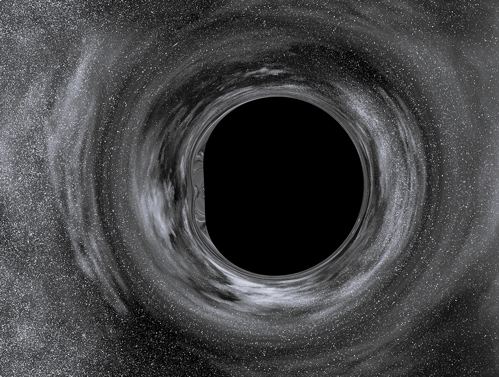

[in]Finity

The stars too have beginnings, but their power accompanies their decline.
- Finite.
A cosmic entity renowned for its immense gravitational influence and mysterious nature.
Formed through the gravitational collapse of massive stars or the merging of compact
objects, black holes are found throughout the universe, from the centers of galaxies to binary star systems.
With an event horizon that marks the point of no return, black holes possess an infinite gravitational
pull, capable of bending spacetime and distorting light through gravitational lensing.
It is more absurd that humans should surpass the speed of [light] than it is that fish should start living on the land.
The speed at which light waves propagate in vacuum is independent both of the motion of the wave source and of the inertial frame of reference of the observer.
It the wise who are the most [foolish]. History has taught us as much.
- an archaic word for [insignificant]
- ridiculous or [absurd]; not worthy of consideration
- resulting from folly or [stupidity]
- unwise; silly
